UmaMind
Food Categories & Descriptions
Sweets:
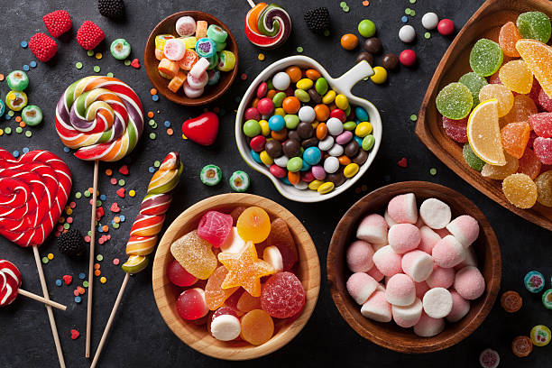 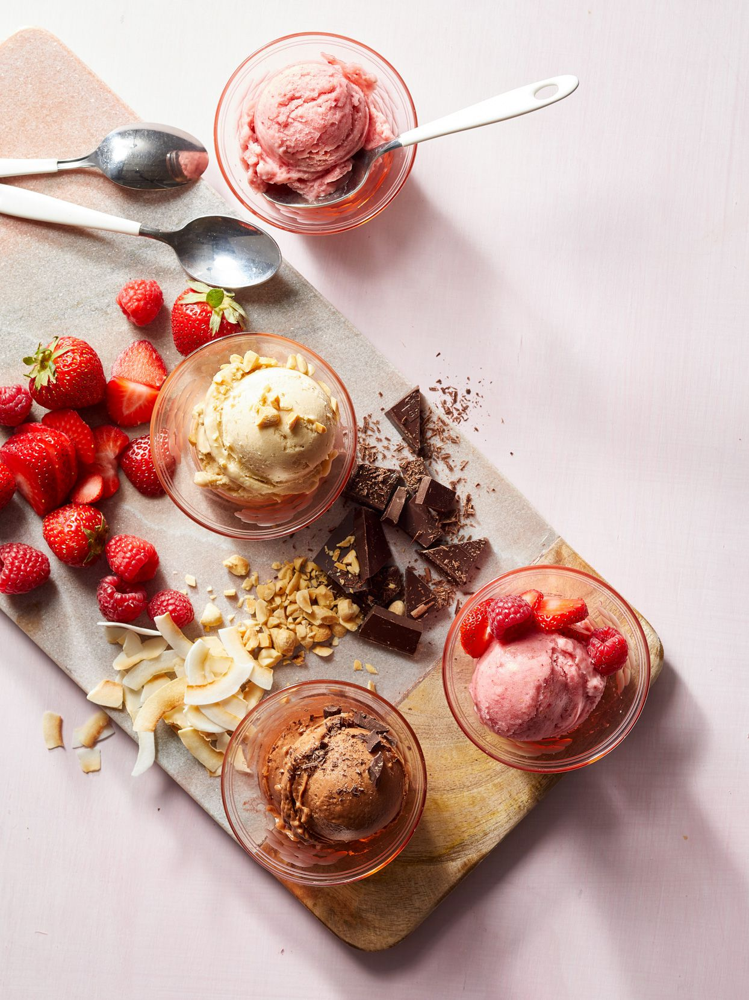
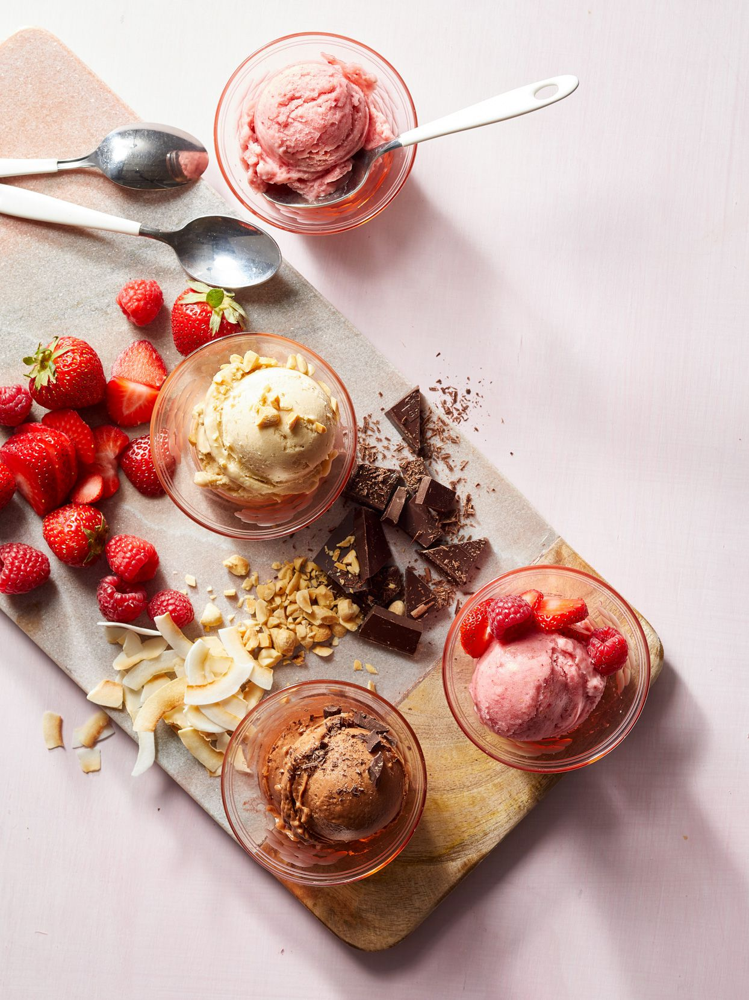
Food description for 'sweets' are simple carbohydrates that contain monosaccharides and disaccharides. The three common types of sugars are glucose, fructose, and galactose. Sweets consist of syrups, sweetened, saccharine, along with a combination of different food descriptions. The generalized types of desserts are baked goods, frozen desserts, fruits, fried desserts.
Umami / Savory (*Fun Fact: "UmaMind" is a mix of "Umami" and "Mind"):
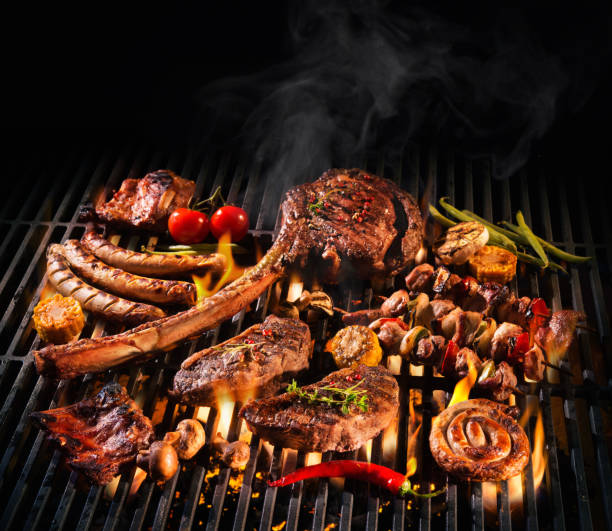 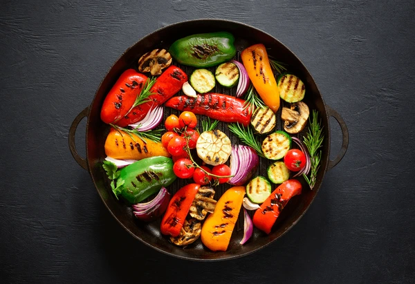 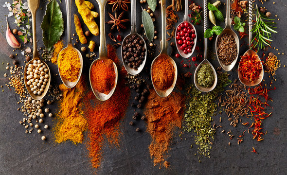Food description for 'savory' are consisting of a salty or spicy flavor. Umami is a word, derived from Japanese, and is synonymous to the word savory. Oils, vegetables, meats, spices, seasonings, grease, broth, soups, savory dairies, are one of the many examples of savory foods, but are mentioned because they were featured in the video.
Spicy:
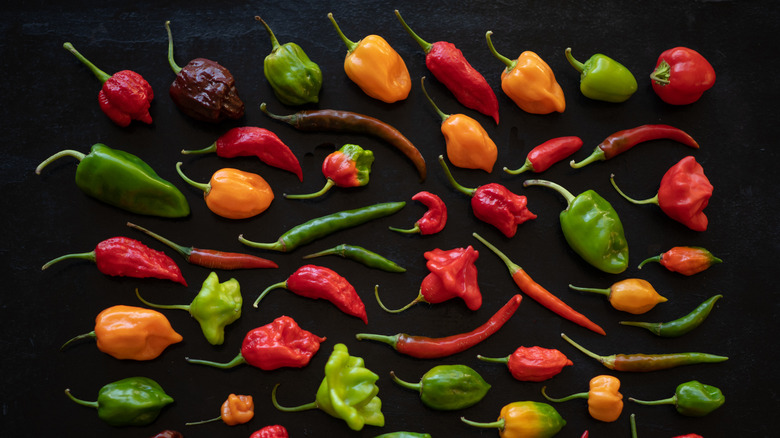 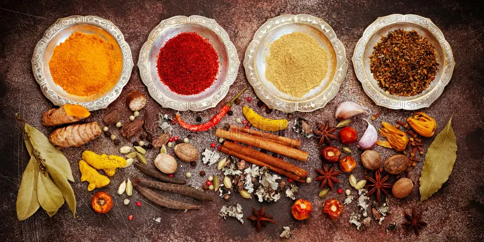 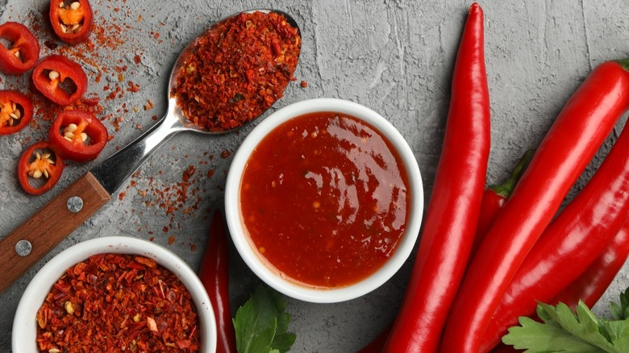 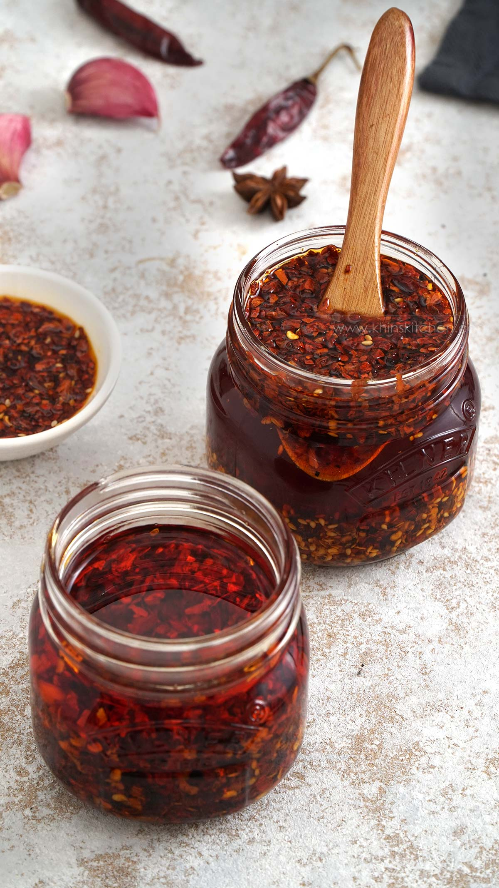Food description for 'spicy' is including capsaicin. Spicy food contains spices that can add to the flavor of the food, along with a tingling sensation of "hot", which activates taste receptors, triggering a reaction. Peppers, spices, and sauces are additions to make a regular meal become spicy.
Bitter:
 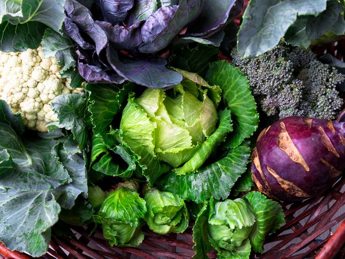
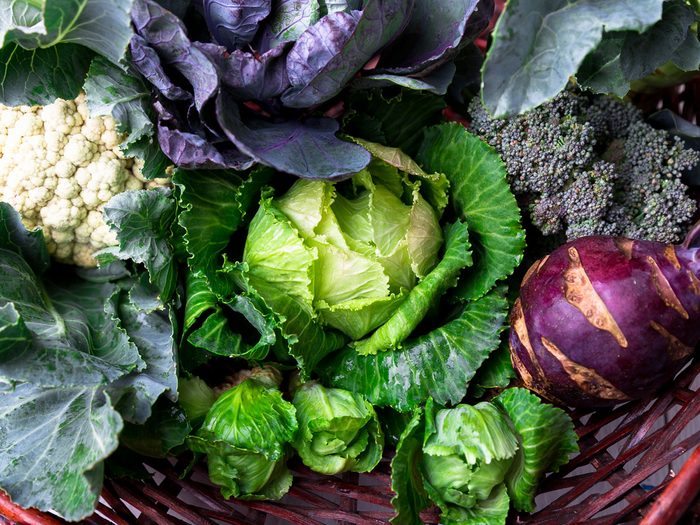
Food description for 'bitter' is denatonium. Biiter foods include: coffee (depending on the roast and type of coffee bean), tea (depending on the tea leaf), cruciferous vegetables raw / cooked, cocoa, and many more.
Acidic:
 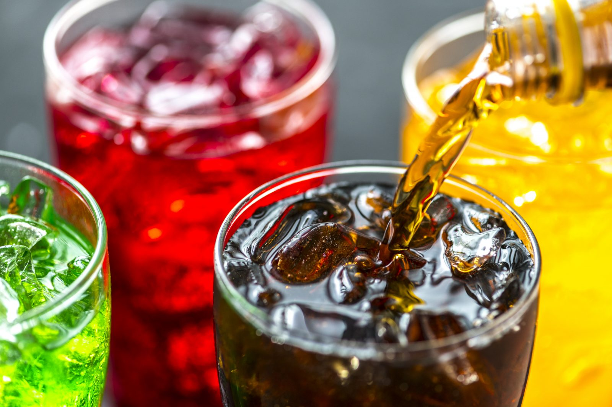
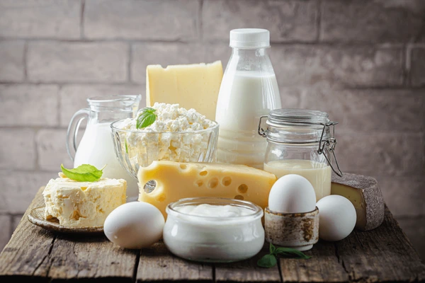
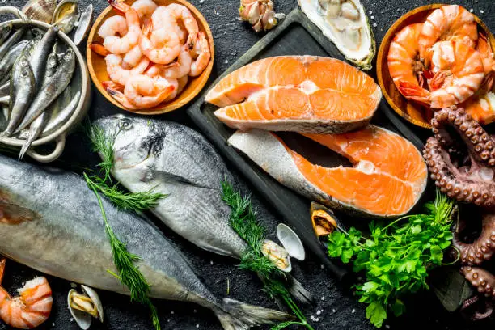
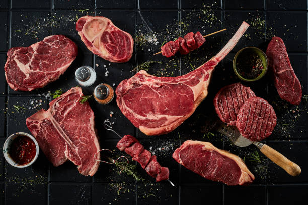
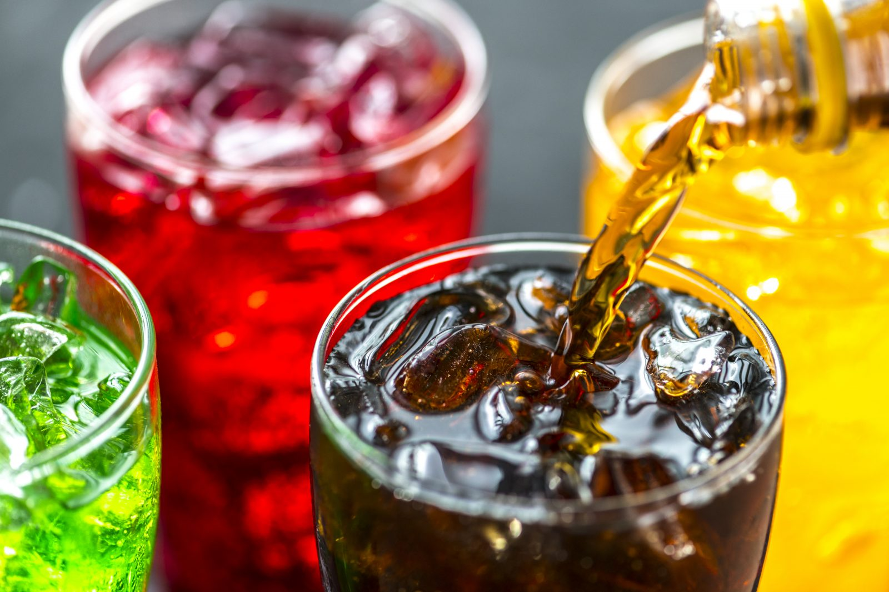
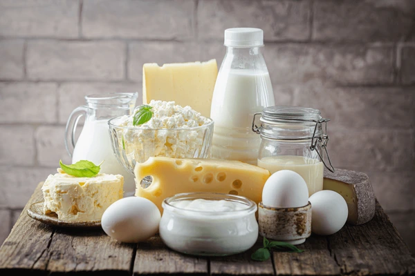
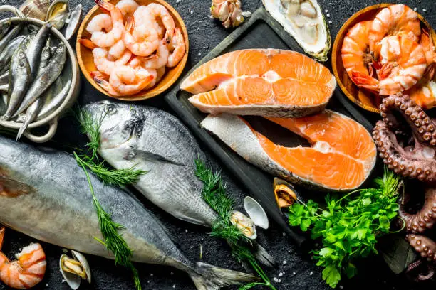
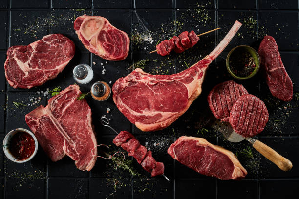
Food description for 'acidic' are preservatives / antioxidants and are additions to food. The common acids: malic acid, citric acid, vinegar, lactic acid, tartaric acid, folic acid, and fumaric acid. Foods that contain acid: citrus fruits, certain dairy products, sodas, grains, processed foods, fish / most seafood, alcohol, and red meats.
DISCLAIMER! The information list is a general overview of the basic tastes. We are not a dietician and we are nota nutritionist, but we are informing you of what foods are listed in the video and hope that you are informed of the different foods and we hope you take the information and apply it to socialize about food with your new connection(s) and consider their preferences and if they have any food allergies. Thank you for reading!
Food categories that are mentioned above are featured in the video and are applicable to food socializing and understanding food cultures. The purpose of Umamind is to allow for reading data from you to match-make with an individual or group of people, to your preference, and suggests you with the possibilities of making food or going out to food places: home cooking, restaurants, one-on-one, with multiple people.